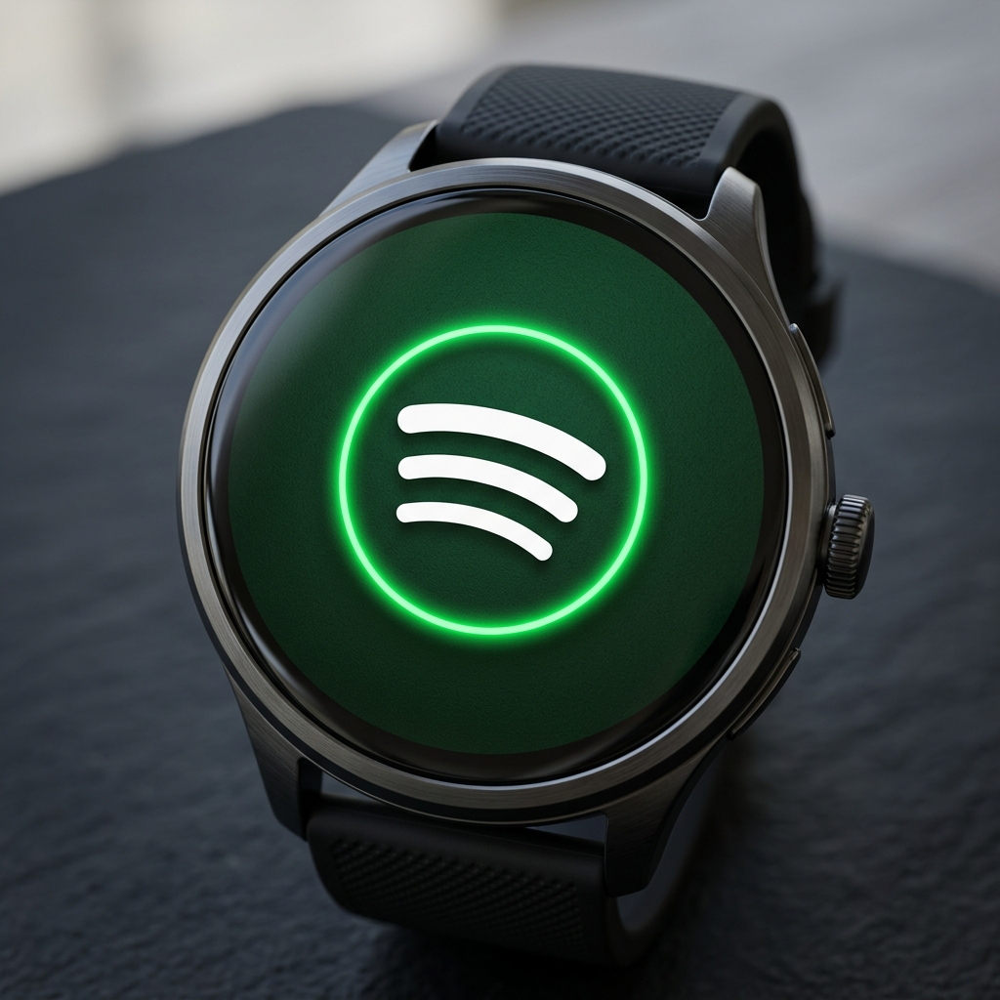

Eines der befreiendsten Erlebnisse für Läufer, Fitnessstudiobesucher und Outdoor-Wanderer ist es, sich auf den Weg zum Training zu machen, ohne ein schweres Smartphone in der Tasche zu haben. Das Telefon zurückzulassen bedeutete jahrelang, still zu rennen. Moderne Wear OS-Smartwatches (wie die Samsung Galaxy Watch-Serie, Google Pixel Watch und TicWatch) verfügen jedoch über internen Speicher und integrierte Bluetooth-Funktionen, die genau dieses Problem lösen sollen.
Mit der offiziellen Spotify-Anwendung für Wear OS können Sie Musik, Alben, Playlists und Podcasts direkt in den lokalen Speicher Ihrer Uhr herunterladen. Dadurch können Sie Ihre Bluetooth-Kopfhörer direkt mit Ihrer Uhr verbinden und Ihre Audiodaten offline genießen. Hier finden Sie eine Schritt-für-Schritt-Anleitung zum Konfigurieren der Offline-Musikwiedergabe auf Ihrer Smartwatch.

Voraussetzungen für Spotify Offline
Bevor Sie beginnen, stellen Sie sicher, dass Sie Folgendes bereit haben:
- A Spotify Premium-Abonnement. Der Offline-Download ist eine Premium-Funktion. Kostenlose Konten können Musik nur über eine aktive WLAN- oder LTE-Verbindung streamen.
- Ihre Uhr muss laufen Tragen Sie OS 2.0 oder höher (Für das beste Erlebnis wird dringend empfohlen, OS 3, 4 oder 5 zu verwenden.)
- Eine aktive WLAN-Verbindung auf Ihrer Uhr, um den ersten Downloadvorgang zu beschleunigen.
- Ein Paar Bluetooth-Kopfhörer oder -Ohrhörer, die direkt mit Ihrer Uhr gekoppelt sind.
Schritt 1: Installieren Sie Spotify auf Ihrer Smartwatch

Wenn Sie Spotify noch nicht auf Ihrer Uhr installiert haben, laden wir es herunter:
- Öffnen Sie die Play Store App auf Ihrer Wear OS-Uhr.
- Suchen Sie nach „Spotify“ und tippen Sie auf die offizielle App.
- Klopfen Installieren um die Anwendung auf Ihr Wearable herunterzuladen.
- Öffnen Sie nach der Installation die App. Sie werden aufgefordert, die Watch-App mit Ihrem Konto zu koppeln.
- Wählen Sie die Aktivierungsmethode. Sie können es koppeln, indem Sie die Spotify-App auf Ihrem Telefon öffnen (die die Uhr automatisch erkennt) oder indem Sie einen Code in Ihren Browser eingeben
spotify.com/pair.
Schritt 2: Playlists und Podcasts offline herunterladen
Sobald Sie auf Ihrer Uhr bei Ihrem Spotify Premium-Konto angemeldet sind, befolgen Sie diese Schritte, um Audiodateien lokal zu speichern:
- Stellen Sie sicher, dass Ihre Uhr mit einem Schnellzugriff verbunden ist Wi-Fi-Netzwerk. Das Herunterladen über Bluetooth ist extrem langsam und belastet den Akku.
- Öffnen Sie die Spotify-App auf Ihrer Uhr und wischen Sie von links nach rechts, um auf den Hauptnavigationsbildschirm der Bibliothek zuzugreifen.
- Navigieren Sie zu Ihrem Wiedergabelisten, Alben, oder Podcasts.
- Wählen Sie die spezifische Wiedergabeliste oder das Album aus, die Sie herunterladen möchten.
- Tippen Sie auf „Zum Ansehen herunterladen“ Schaltfläche (dargestellt durch einen Pfeil, der nach unten in einen kreisförmigen Umriss zeigt).
- Der Pfeil beginnt zu blinken und zeigt damit an, dass der Download begonnen hat. Sobald der Vorgang abgeschlossen ist, wird der Pfeil durchgehend grün.
Profi-Tipp: Während des Ladevorgangs herunterladen
Das Herunterladen von Musik ist eine schwere Hintergrundaufgabe. Um eine Entladung des Akkus während des Downloadvorgangs zu vermeiden, legen Sie Ihre Uhr beim Herunterladen großer Wiedergabelisten auf das Ladegerät. Die Uhr bleibt mit dem WLAN verbunden und lädt die Titel schnell herunter.
Schritt 3: Verbinden Sie Bluetooth-Kopfhörer mit Ihrer Uhr
Da Smartwatches keine Musik über ihre winzigen Benachrichtigungslautsprecher abspielen, müssen Sie Bluetooth-Kopfhörer direkt mit der Uhr koppeln:
- Setzen Sie Ihre Bluetooth-Ohrhörer (z. B. Galaxy Buds, Pixel Buds oder AirPods) ein Pairing-Modus.
- Wischen Sie auf Ihrer Uhr nach unten, um das Schnelleinstellungsfeld zu öffnen, und tippen Sie auf Einstellungen (Ausrüstung) Symbol.
- Wählen Verbindungen > Bluetooth (oder Konnektivität > Bluetooth).
- Stellen Sie sicher, dass Bluetooth aktiviert ist, und tippen Sie dann auf Gerät koppeln oder suchen Sie nach verfügbaren Geräten.
- Wählen Sie Ihre Kopfhörer aus der Liste aus. Bestätigen Sie die Kopplungsaufforderung auf Ihrer Uhr.
Lokalen Speicherplatz verwalten
Smartwatches verfügen über einen begrenzten internen Speicher, der normalerweise zwischen 8 GB und 32 GB liegt. Betriebssysteme und Systemdateien nehmen einen erheblichen Teil dieser Kapazität ein. Um Ihren Musikspeicher effizient zu verwalten, sehen Sie sich diese allgemeine Referenztabelle an:
| Speicherkapazität | Durchschn. Freier Speicherplatz für Apps und Musik | Ungefähres Song-Limit (96 kbps) |
|---|---|---|
| 8 GB (Ältere Uhren) | ~ 2,5 GB | ~ 500 Lieder |
| 16 GB (Pixel Watch 1/2) | ~ 8,0 GB | ~ 1.800 Lieder |
| 32 GB (Galaxy Watch 6) | ~ 21,0 GB | ~ 5.000 Lieder |
So löschen Sie heruntergeladene Musik:
Wenn Ihnen der Speicherplatz ausgeht oder Sie Ihre Musikbibliothek wechseln möchten, rufen Sie die heruntergeladene Wiedergabeliste oder das heruntergeladene Album in der Spotify-App auf und tippen Sie auf „Heruntergeladen“ grünes Pfeilsymbol. Klopfen Entfernen um die Dateien von Ihrer Uhr zu löschen. Dadurch wird sofort Speicherplatz freigegeben, ohne dass die Wiedergabelisten auf Ihrem Telefon oder Cloud-Konto beeinträchtigt werden.
Letzte Gedanken
Musik offline auf Wear OS zu genießen, ist ein Game-Changer. Indem Sie sich ein paar Minuten Zeit nehmen, um Ihre Uhr mit dem WLAN zu verbinden, Ihre bevorzugten Trainings-Playlists herunterzuladen und Ihre Bluetooth-Ohrhörer zu koppeln, können Sie echtes digitales Wohlbefinden erreichen. Lassen Sie Ihr Smartphone zu Hause, gehen Sie nach draußen und genießen Sie Ihren Workout-Soundtrack nur mit Ihrer Smartwatch am Handgelenk!